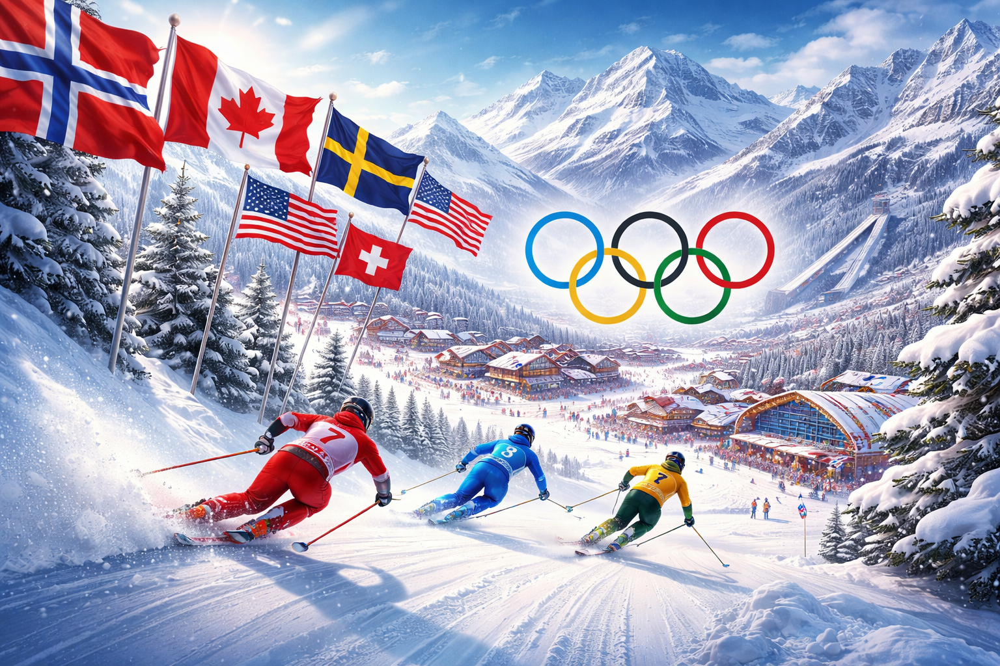
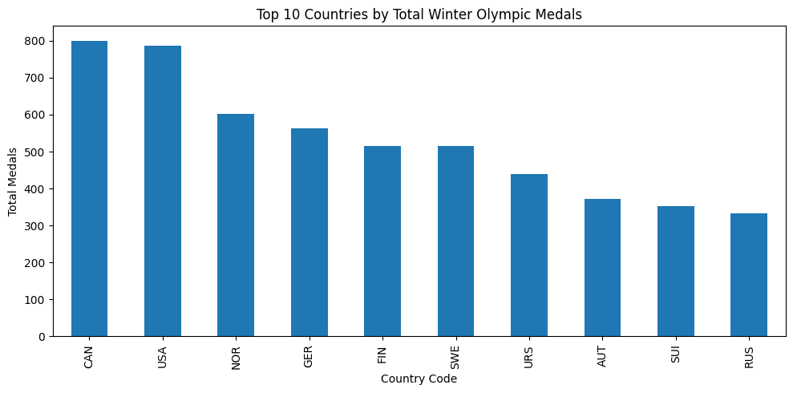
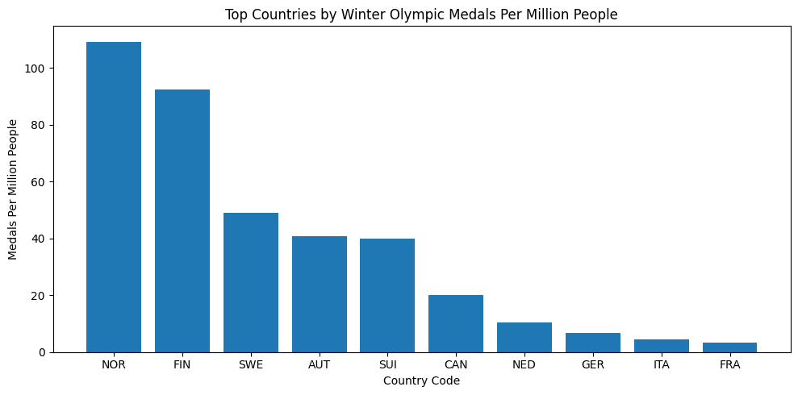
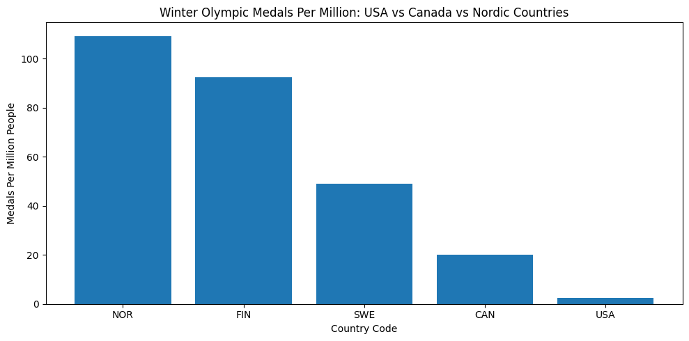
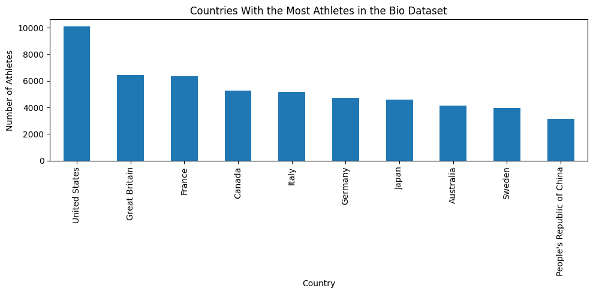

Why Do Tiny Cold Countries Win So Many Winter Olympic Medals?
A data story about Winter Olympic medals, population, and why smaller cold countries often outperform larger ones.
sports
olympics
data
Author
Alex
Published
February 18, 2025

Winter Olympics image
Why Do Tiny Cold Countries Win So Many Winter Olympic Medals?
When people think about the Winter Olympics, they usually imagine big countries like the United States or Canada winning the most medals. And in total numbers, that is often true.
But total medals do not tell the whole story.
A country with a huge population has way more people to choose from, so it makes sense that it might win more medals overall. That made me wonder: what happens if we compare Winter Olympic success to population size?
To answer that, I looked at Winter Olympic medal data, country population data, and athlete bio data. What I found was more interesting than I expected.
import pandas as pdimport matplotlib.pyplot as pltmedals = pd.read_csv("winter_olympics_medals.csv")pop = pd.read_csv("populations.csv")winter_medals = medals[medals["medal"].notna()].copy()medal_counts = winter_medals.groupby("noc").size().sort_values(ascending=False)top10_total = medal_counts.head(10)plt.figure(figsize=(10,5))top10_total.plot(kind="bar")plt.title("Top 10 Countries by Total Winter Olympic Medals")plt.ylabel("Total Medals")plt.xlabel("Country Code")plt.tight_layout()plt.show()

Total Medals Tell One Story
If you just count medals, countries like the United States, Canada, Germany, and Norway rise to the top. That makes sense. These countries have large sports systems, long Olympic histories, and lots of resources.
At first, it looks like the story is simple: the biggest and strongest countries win the most.
# use 2023 population as the closest recent comparisonpop_2023 = pop[["Country Code", "2023"]].copy()pop_2023.columns = ["noc", "population"]country_map = {"USA": "USA","CAN": "CAN","NOR": "NOR","SWE": "SWE","FIN": "FIN","GER": "DEU","FRA": "FRA","ITA": "ITA","SUI": "CHE","AUT": "AUT","NED": "NLD"}medal_df = medal_counts.reset_index()medal_df.columns = ["noc", "medals"]medal_df["pop_code"] = medal_df["noc"].map(country_map)merged = medal_df.merge(pop_2023, left_on="pop_code", right_on="noc", how="left", suffixes=("_medal", "_pop"))merged["medals_per_million"] = merged["medals"] / (merged["population"] /1_000_000)per_million = merged.dropna(subset=["medals_per_million"]).sort_values("medals_per_million", ascending=False).head(10)plt.figure(figsize=(10,5))plt.bar(per_million["noc_medal"], per_million["medals_per_million"])plt.title("Top Countries by Winter Olympic Medals Per Million People")plt.ylabel("Medals Per Million People")plt.xlabel("Country Code")plt.tight_layout()plt.show()

Population Changes the Story
Once population is added, the ranking changes a lot.
Big countries still do well, but smaller countries start to look much more impressive. A country with a small population that wins a lot of medals is doing something special.
This is where countries like Norway, Finland, and Sweden really stand out. They may not always have the biggest populations, but they consistently produce amazing results in winter sports.
focus = merged[merged["noc_medal"].isin(["USA", "CAN", "NOR", "SWE", "FIN"])].copy()focus = focus.sort_values("medals_per_million", ascending=False)plt.figure(figsize=(10,5))plt.bar(focus["noc_medal"], focus["medals_per_million"])plt.title("Winter Olympic Medals Per Million: USA vs Canada vs Nordic Countries")plt.ylabel("Medals Per Million People")plt.xlabel("Country Code")plt.tight_layout()plt.show()

bios = pd.read_csv("bios.csv")athletes_by_country = bios["NOC"].value_counts().head(10)plt.figure(figsize=(10,5))athletes_by_country.plot(kind="bar")plt.title("Countries With the Most Athletes in the Bio Dataset")plt.ylabel("Number of Athletes")plt.xlabel("Country")plt.tight_layout()plt.show()

Athletes Matter Too
Another way to think about this is by looking at how many athletes come from each country. Bigger countries often send more athletes, which gives them more chances to win medals.
But even then, some countries still perform above expectations. That makes the story more interesting. It is not just about sending the most people. It is about building a system where winter sports are part of national identity.
Conclusion
At first, Winter Olympic success looks like a story about powerful countries winning the most medals. But once population is added, the story becomes much more interesting.
The countries that really stand out are not always the biggest ones. Smaller, colder countries often do the most with the least. Norway is the clearest example of this.
So the next time I watch the Winter Olympics, I probably will not be most impressed by whichever country wins the most medals overall. I will be paying more attention to which countries do the most with the fewest people.